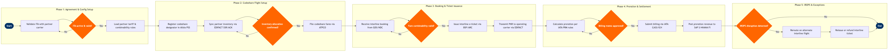

Interline & Codeshare Ticketing
Network Planning & Scheduling › Sales & Distribution · 17 L4 steps · 5 phases · 4 decision gates · Updated 2026-10-01 20:52
📊
Process Flow Diagram (BPMN)

📋
L4 Process Steps
| Step | Step Name | Role / Swim Lane | System | Input | Output | KPI | Dec? | Exc? |
|---|---|---|---|---|---|---|---|---|
Phase 1 1.1 |
Validate Interline Ticketing Agreement status | Interline Agreements Manager | IATA MITA Portal | Partner carrier IATA code, agreement reference number | ITA validity confirmation and billing currency code | 100% of active partners with valid ITA before ticket issuance enabled | Y | N |
| 1.2 | Load partner carrier tariff and fare rules | Fares & Tariffs Analyst | ATPCO | Partner carrier tariff filing, IATA fare construction rules | Loaded fare table with combinability and routing rules | Tariff load completed within 24 hours of ATPCO effective date | N | Y |
| 1.3 | Configure MITA SSR message formats in PSS | Distribution Systems Engineer | Amadeus Altéa PSS | Partner carrier EDIFACT profile, SSR/OSI message templates | Configured interline messaging profiles in Altéa | SSR message delivery success rate ≥99.5% | N | Y |
Phase 2 2.1 |
Register codeshare flight designator in Amadeus Altéa | Schedule Planning Analyst | Amadeus SkyWORKS | Operating carrier flight schedule, codeshare agreement terms | Codeshare flight records in SSIM format, loaded to Altéa inventory | Codeshare schedule loaded ≥90 days before first departure date | N | Y |
| 2.2 | Sync partner inventory blocks via EDIFACT SSR/ACK | Revenue Management Analyst | Amadeus Revenue Management (NRM) | Codeshare seat block allocation from operating carrier | Confirmed inventory allocation in Altéa booking classes | Inventory sync acknowledgement (ACK) received within 15 minutes of block request | Y | Y |
| 2.3 | File codeshare fares via ATPCO and validate combinability | Fares & Tariffs Analyst | ATPCO | Agreed codeshare fare levels, routing restrictions, booking class mapping | Published codeshare fare filing with combinability Cat 10/11 rules | Zero misfiled combinability rules causing GDS pricing errors at launch | N | Y |
Phase 3 3.1 |
Receive interline booking request from GDS or NDC | Distribution Channel Manager | Sabre GDS | Agent PNR with multi-carrier itinerary, passenger name, fare basis | Interline booking record with all carrier segments confirmed | GDS booking response time ≤3 seconds for interline itineraries | N | Y |
| 3.2 | Perform fare construction combinability check | Revenue Integrity Analyst | Amadeus Altéa PSS | Multi-carrier itinerary, fare basis codes, routing | Approved fare construction or rejected itinerary with reason code | Fare construction error rate ≤0.5% of all interline transactions | Y | Y |
| 3.3 | Issue interline e-ticket via BSP or ARC | Revenue Integrity Analyst | IATA BSP Link | Approved fare construction, PNR, passenger data, payment details | Interline e-ticket (ET) with all coupons, transmitted to BSP/ARC | Ticket issuance success rate ≥99.8%; time-to-issue ≤60 seconds | N | Y |
| 3.4 | Transmit PNR and coupon data to operating carrier | Distribution Systems Engineer | Amadeus Altéa PSS | Issued e-ticket coupons, booking class, SSR elements | EDIFACT PNRGOV / IATCI message delivered to partner carrier PSS | PNR transmission to operating carrier within 5 minutes of ticket issuance; delivery confirmation ≥99% | N | Y |
Phase 4 4.1 |
Calculate revenue proration using IATA Proration rules | Interline Revenue Accounting Analyst | SCI Revenue Accounting (IBS Software) | Issued ticket coupons, fare basis, mileage/unit proration method | Proration memo per carrier with amounts in billing currency | Proration calculation completed within T+1 business day of travel date | N | Y |
| 4.2 | Generate and submit interline billing memo via IATA CASS | Interline Revenue Accounting Analyst | IATA CASS (Cargo Accounts Settlement System) / ICH | Proration memos, coupon usage data, billing period cutoff | Interline billing memo (IBM) submitted to IATA Clearing House | Billing memo submission before monthly IATA ICH cutoff (25th of month); dispute rate ≤2% | N | Y |
| 4.3 | Reconcile and approve interline billing statements | Interline Revenue Accounting Manager | SCI Revenue Accounting (IBS Software) | Partner carrier billing memos, internal proration calculations | Reconciled statement with approved, disputed, and pending items | Reconciliation completed within 10 business days of billing statement receipt; dispute resolution ≤30 days | Y | Y |
| 4.4 | Post approved proration revenue to general ledger | Finance Accountant | SAP S/4HANA Finance (FI/CO) | Approved interline billing statement, GL account mapping | Revenue journal entries posted to SAP GL with interline partner cost centre | GL posting completed within 2 business days of billing approval; zero unposted items at month-end close | N | N |
Phase 5 5.1 |
Detect schedule disruption affecting interline itinerary | Network Operations Controller | Amadeus Altéa PSS | IROPS alert from operating carrier, flight cancellation or delay >3 hours | Affected interline PNR list flagged for rebooking action | Disruption notification to marketing carrier within 30 minutes of operating carrier declaring IROPS | N | Y |
| 5.2 | Reroute passenger on alternate interline or codeshare flight | Customer Experience Agent | Amadeus Altéa PSS | Disrupted PNR, alternate routing options, IATA Resolution 735d rebooking rules | Reprotected PNR on new itinerary, updated coupons transmitted to operating carrier | Passenger reprotection offer presented within 60 minutes of IROPS declaration; acceptance rate ≥85% | N | Y |
| 5.3 | Process interline ticket reissue or refund | Revenue Integrity Analyst | IATA BSP Link | Original e-ticket coupons, rerouting decision, applicable waiver code | Reissued ticket or refund application submitted to BSP with ADM/ACM if required | Reissue or refund processing completed within 24 hours of passenger request; ADM dispute rate ≤1% | N | Y |
📋